Visualizing ellipsoids in environmental space
Source:vignettes/plotting_vignette.Rmd
plotting_vignette.RmdSummary
- Description
- Getting ready
- Loading example data
- plot_ellipsoid()
- add_data() and add_ellipsoid()
- plot_ellipsoid_pairs()
Description
This vignette demonstrates the plotting functions available in
nicheR for visualizing ellipsoidal niche models in
environmental space (E-space). All plots operate in E-space: axes
represent environmental variables and points represent environmental
combinations from background data or predictions.
The functions covered are:
-
plot_ellipsoid(): opens a new E-space plot showing the ellipsoid boundary, optionally with background points or a prediction surface. -
add_data(): overlays points onto an existing plot. Points can be a single color or colored by a continuous variable such as suitability. -
add_ellipsoid(): overlays an ellipsoid boundary onto an existing plot. -
plot_ellipsoid_pairs(): produces a multi-panel layout showing all pairwise two-dimensional projections of an ellipsoid, with globally consistent axis limits.
These functions are designed to be layered. The typical workflow is
to open a plot with plot_ellipsoid() and then add data or
boundaries on top with add_data() and
add_ellipsoid().
Getting ready
If nicheR has not been installed yet, please do so. See
the Main guide for installation
instructions.
Loading example data
We use the same example data as in the other vignettes: a
two-dimensional nicheR_ellipsoid object for a reference
species and the corresponding North American background data.
We will also need some predictions to demonstrate the prediction-based plotting modes. We compute them all here so they are available throughout the vignette.
# Non-truncated Mahalanobis distance
pred_maha <- predict(ref_ellipse,
newdata = back_data[, ref_ellipse$var_names],
include_mahalanobis = TRUE,
include_suitability = FALSE,
verbose = FALSE)
# Non-truncated suitability
pred_suit <- predict(ref_ellipse,
newdata = back_data[, ref_ellipse$var_names],
include_mahalanobis = FALSE,
include_suitability = TRUE,
verbose = FALSE)
# Truncated suitability (outside = 0, inside = suitability value)
pred_trunc <- predict(ref_ellipse,
newdata = back_data[, ref_ellipse$var_names],
include_mahalanobis = FALSE,
include_suitability = FALSE,
suitability_truncated = TRUE,
verbose = FALSE)plot_ellipsoid()
plot_ellipsoid() opens a new E-space plot. It has three
display modes depending on what is provided:
-
Ellipsoid only: neither
backgroundnorpredictionis given. The function draws just the ellipsoid boundary, sized to the boundary itself. This is the starting point for building layered plots manually withadd_data()andadd_ellipsoid(). -
Background: a
backgrounddata frame is given. Background points are drawn first, the ellipsoid boundary is drawn on top, and axis limits span both. -
Prediction: a
predictiondata frame is given. Whencol_layeris also specified, points are colored by that column and the axis limits span the full prediction extent.
Ellipsoid boundary only
When neither background nor prediction is
given, plot_ellipsoid() draws only the ellipsoid boundary.
The plot is sized to the boundary extent, so axis limits reflect only
the ellipsoid dimensions. This mode is useful when you want full manual
control over what goes into the plot.
par(mar = mars)
plot_ellipsoid(ref_ellipse,
col_ell = "#e10000",
lwd = 2,
xlab = "Bio1 (Mean Annual Temperature)",
ylab = "Bio12 (Annual Precipitation)",
main = "Ellipsoid boundary only")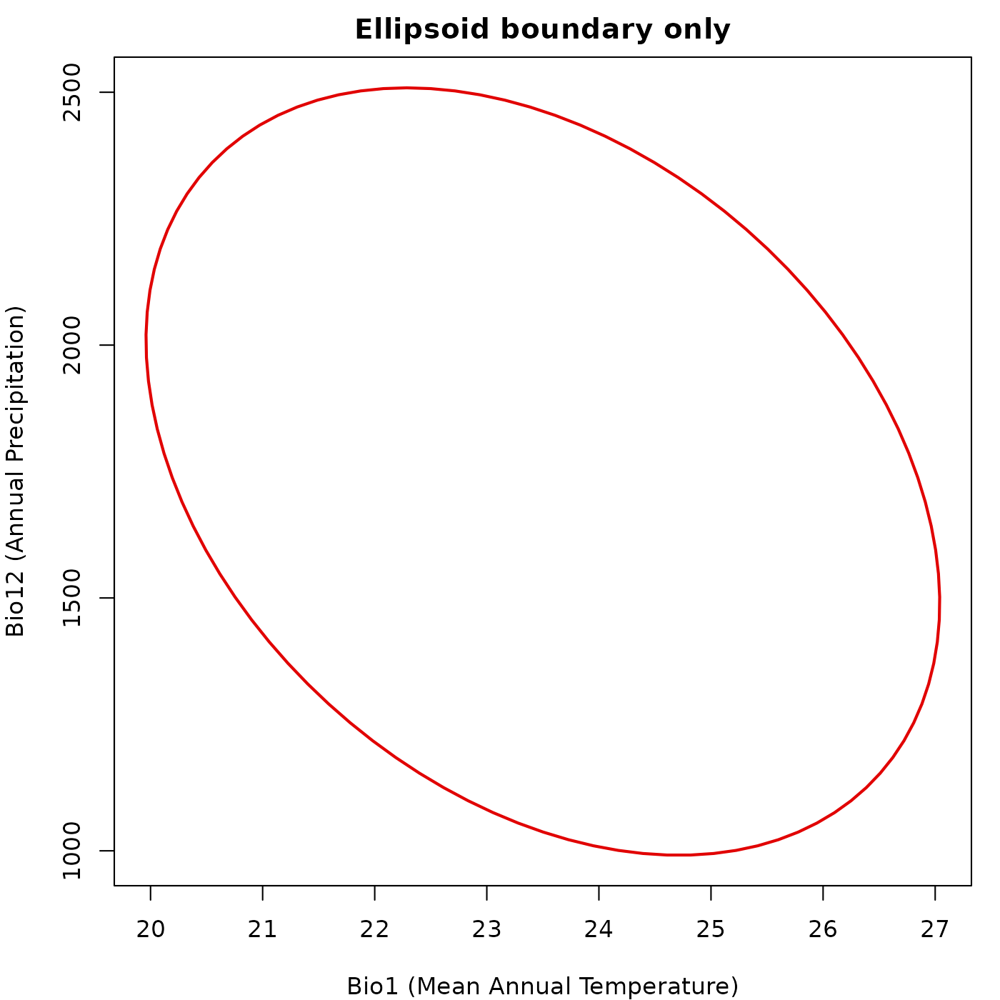
Background points
Passing a background data frame draws the background
points first and the ellipsoid boundary on top. Axis limits are computed
from both the background extent and the ellipsoid boundary, so the
ellipsoid is never clipped.
par(mar = mars)
plot_ellipsoid(ref_ellipse,
background = back_data[, ref_ellipse$var_names],
col_ell = "#e10000",
col_bg = "#9a9797",
lwd = 2, pch = ".",
xlab = "Bio1 (Mean Annual Temperature)",
ylab = "Bio12 (Annual Precipitation)",
main = "Background points")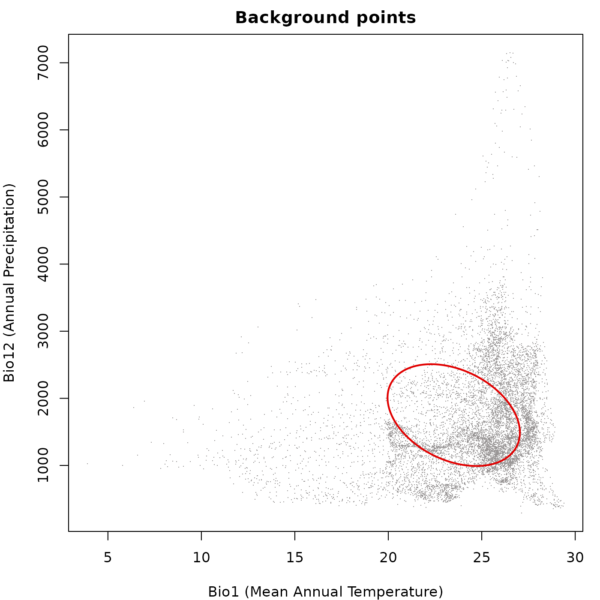
Prediction colored by a continuous variable
Passing a prediction data frame and specifying
col_layer colors the points by the values in that column.
Any column in the prediction data frame can be used, including
Mahalanobis distance, suitability, or truncated versions of either.
For non-truncated predictions every point receives a color from the
palette, because every point has a finite positive value. The ellipsoid
boundary is drawn on top in col_ell.
par(mar = mars)
plot_ellipsoid(ref_ellipse,
prediction = pred_maha,
col_layer = "Mahalanobis",
pal = blue_pal,
col_ell = "#e10000",
lwd = 2, pch = 16, cex_bg = 0.5,
xlab = "Bio1 (Mean Annual Temperature)",
ylab = "Bio12 (Annual Precipitation)",
main = "Mahalanobis distance (non-truncated)")
legend("topright",
legend = c("Ellipsoid boundary", "Low D\u00b2", "High D\u00b2"),
col = c("#e10000", blue_pal[5], blue_pal[90]),
pch = c(NA, 16, 16), lty = c(1, NA, NA),
lwd = c(2, NA, NA), cex = 0.8, bty = "n")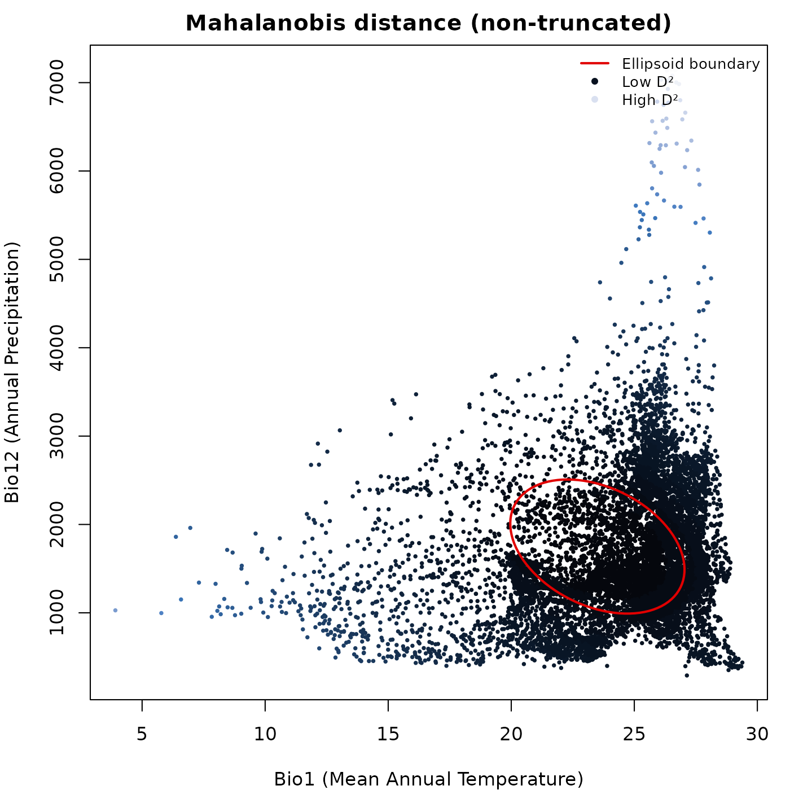
par(mar = mars)
plot_ellipsoid(ref_ellipse,
prediction = pred_suit,
col_layer = "suitability",
pal = vir_pal,
col_ell = "#e10000",
lwd = 2, pch = 16, cex_bg = 0.5,
xlab = "Bio1 (Mean Annual Temperature)",
ylab = "Bio12 (Annual Precipitation)",
main = "Suitability (non-truncated)")
legend("topright",
legend = c("Ellipsoid boundary", "Low suitability", "High suitability"),
col = c("#e10000", vir_pal[5], vir_pal[95]),
pch = c(NA, 16, 16), lty = c(1, NA, NA),
lwd = c(2, NA, NA), cex = 0.8, bty = "n")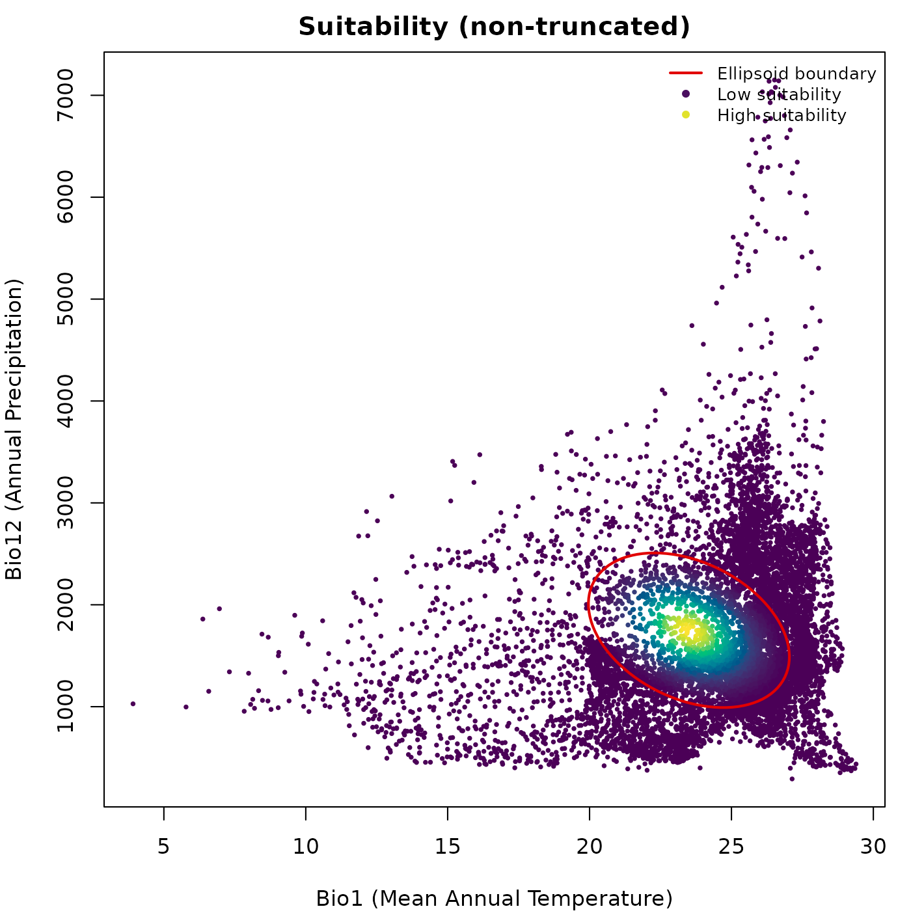
Truncated predictions and grey outside region
When col_layer points to a truncated prediction column
(suitability_trunc or Mahalanobis_trunc),
plot_ellipsoid() automatically detects outside points,
those with value zero or NA, and draws them in
col_bg. Inside points are drawn on top in their palette
color. Axis limits are computed from the full prediction extent so the
view does not collapse to the ellipsoid interior.
par(mar = mars)
plot_ellipsoid(ref_ellipse,
prediction = pred_trunc,
col_layer = "suitability_trunc",
pal = vir_pal,
col_bg = "#d4d4d4",
col_ell = "#e10000",
lwd = 2, pch = 16, cex_bg = 0.5,
xlab = "Bio1 (Mean Annual Temperature)",
ylab = "Bio12 (Annual Precipitation)",
main = "Truncated suitability")
legend("topright",
legend = c("Ellipsoid boundary", "Low suitability",
"High suitability", "Outside (zero)"),
col = c("#e10000", vir_pal[5], vir_pal[95], "#d4d4d4"),
pch = c(NA, 16, 16, 16), lty = c(1, NA, NA, NA),
lwd = c(2, NA, NA, NA), cex = 0.8, bty = "n")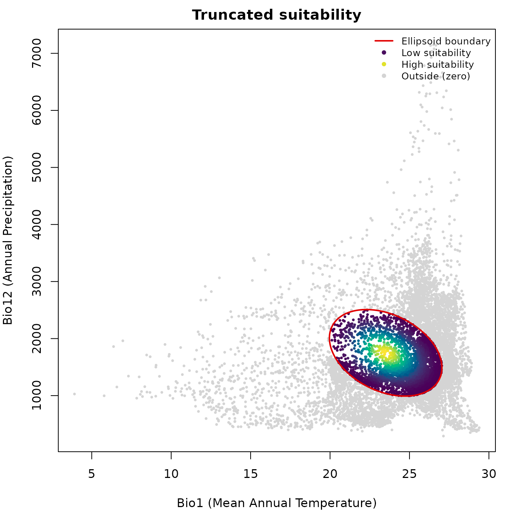
The same pattern applies to truncated Mahalanobis distance, where
outside points receive NA and are drawn in
col_bg.
pred_trunc_maha <- predict(ref_ellipse,
newdata = back_data[, ref_ellipse$var_names],
include_mahalanobis = FALSE,
include_suitability = FALSE,
mahalanobis_truncated = TRUE,
verbose = FALSE)
par(mar = mars)
plot_ellipsoid(ref_ellipse,
prediction = pred_trunc_maha,
col_layer = "Mahalanobis_trunc",
pal = blue_pal,
col_bg = "#d4d4d4",
col_ell = "#e10000",
lwd = 2, pch = 16, cex_bg = 0.5,
xlab = "Bio1 (Mean Annual Temperature)",
ylab = "Bio12 (Annual Precipitation)",
main = "Truncated Mahalanobis distance")
legend("topright",
legend = c("Ellipsoid boundary", "Inside (low D\u00b2)",
"Inside (high D\u00b2)", "Outside (NA)"),
col = c("#e10000", blue_pal[5], blue_pal[90], "#d4d4d4"),
pch = c(NA, 16, 16, 16), lty = c(1, NA, NA, NA),
lwd = c(2, NA, NA, NA), cex = 0.8, bty = "n")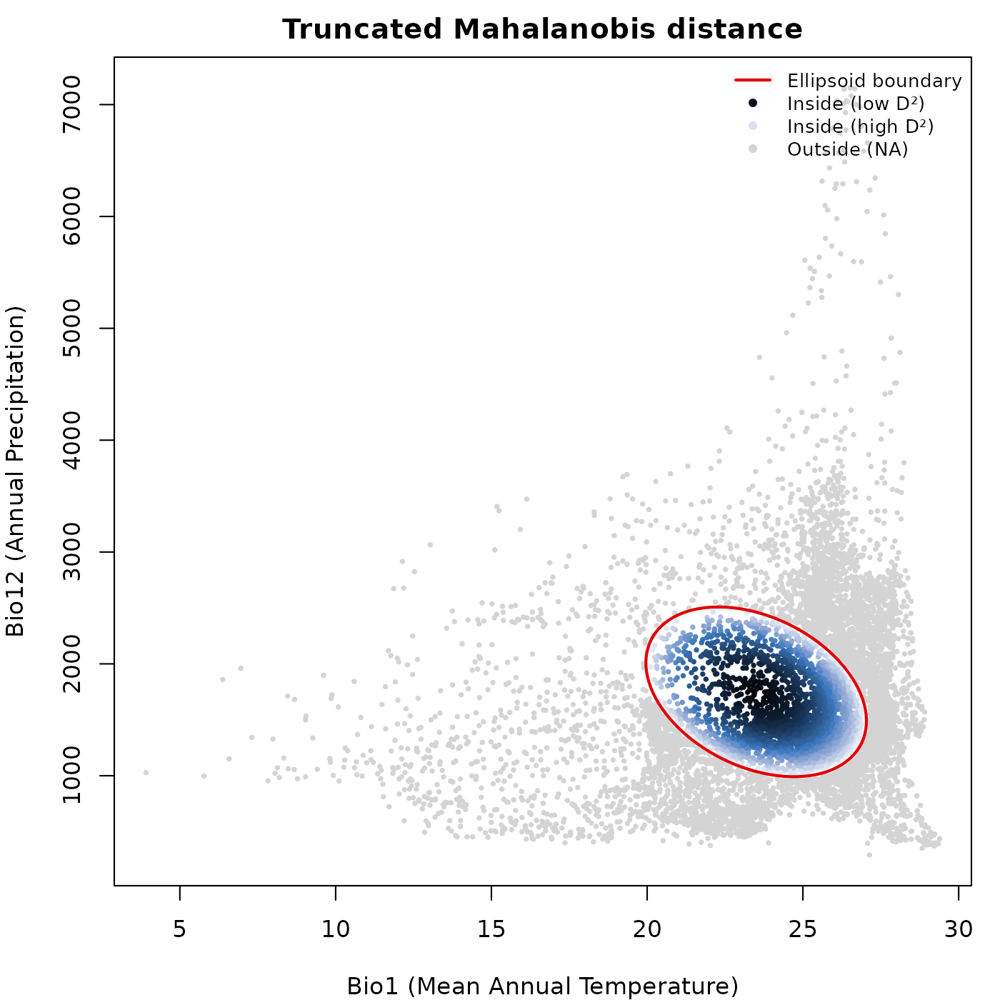
Reversed palette and transparency
rev_pal = TRUE reverses the color palette so high values
map to the dark end instead of the bright end. alpha_bg
controls transparency of the data points and alpha_ell
controls transparency of the ellipsoid boundary line, both on a 0 to 1
scale.
par(mar = mars)
plot_ellipsoid(ref_ellipse,
prediction = pred_suit,
col_layer = "suitability",
pal = vir_pal,
rev_pal = TRUE,
alpha_bg = 0.5,
alpha_ell = 0.8,
col_ell = "#0004d5",
lwd = 2, pch = 16, cex_bg = 0.5,
xlab = "Bio1 (Mean Annual Temperature)",
ylab = "Bio12 (Annual Precipitation)",
main = "Reversed palette + transparency")
legend("topright",
legend = c("Ellipsoid boundary",
"Low suitability (now bright)",
"High suitability (now dark)"),
col = c("#0004d5", vir_pal[95], vir_pal[5]),
pch = c(NA, 16, 16), lty = c(1, NA, NA),
lwd = c(2, NA, NA), cex = 0.8, bty = "n")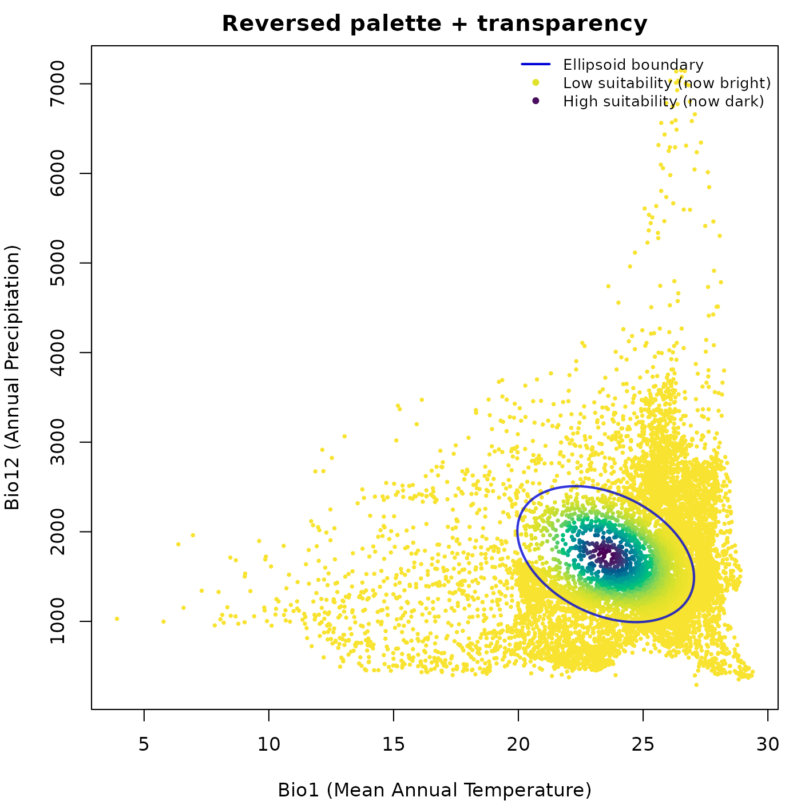
Subsampling large datasets
The bg_sample argument draws a random subsample before
plotting. This is useful when plotting hundreds of thousands of
background points would slow rendering without adding visual
information. The subsample is drawn independently for inside and outside
points when col_layer is active, so both groups remain
represented.
par(mfrow = c(1, 2), cex = 0.75, mar = mars)
plot_ellipsoid(ref_ellipse,
background = back_data[, ref_ellipse$var_names],
col_ell = "#e10000", col_bg = "#9a9797",
lwd = 2, pch = ".",
xlab = "Bio1", ylab = "Bio12",
main = "Full background")
plot_ellipsoid(ref_ellipse,
background = back_data[, ref_ellipse$var_names],
bg_sample = 500,
col_ell = "#e10000", col_bg = "#9a9797",
lwd = 2, pch = 16, cex_bg = 0.4,
xlab = "Bio1", ylab = "Bio12",
main = "Subsampled (n = 500)")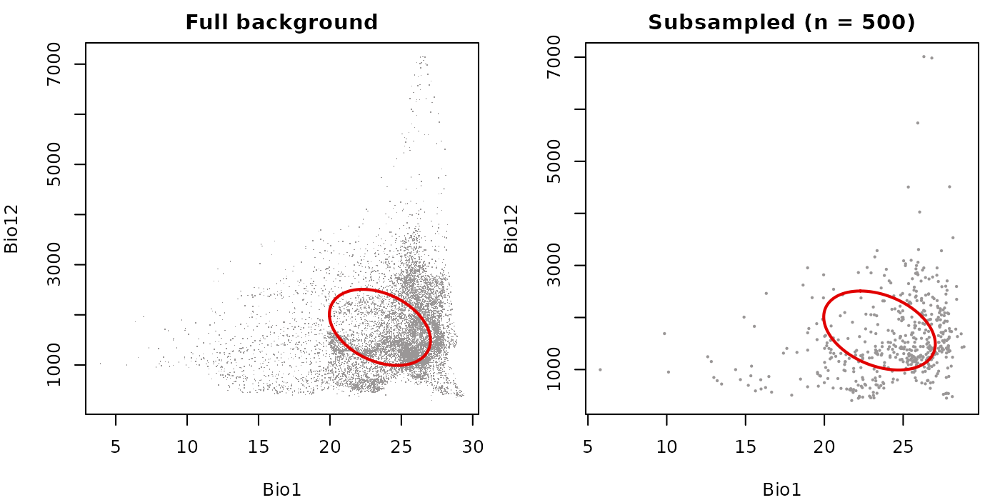
Fixed axis limits for comparing ellipsoids
The fixed_lims argument accepts a named list with
xlim and ylim vectors and overrides the
automatically computed axis limits. This is most useful when placing two
ellipsoids side by side and wanting both panels on the same scale so
their sizes are visually comparable.
# Create a second ellipsoid with a shifted centroid for comparison
ref_ellipse2 <- ref_ellipse
ref_ellipse2$centroid <- ref_ellipse$centroid + c(5, 100)
# Define shared limits from the full background extent
global_lims <- list(
xlim = range(back_data$bio_1, na.rm = TRUE),
ylim = range(back_data$bio_12, na.rm = TRUE)
)
par(mfrow = c(1, 2), cex = 0.75, mar = mars)
plot_ellipsoid(ref_ellipse,
background = back_data[, ref_ellipse$var_names],
fixed_lims = global_lims,
col_ell = "#e10000", col_bg = "#9a9797",
lwd = 2, pch = ".",
xlab = "Bio1", ylab = "Bio12",
main = "Ellipsoid 1")
plot_ellipsoid(ref_ellipse2,
background = back_data[, ref_ellipse2$var_names],
fixed_lims = global_lims,
col_ell = "#0004d5", col_bg = "#9a9797",
lwd = 2, pch = ".",
xlab = "Bio1", ylab = "Bio12",
main = "Ellipsoid 2 (shifted centroid)")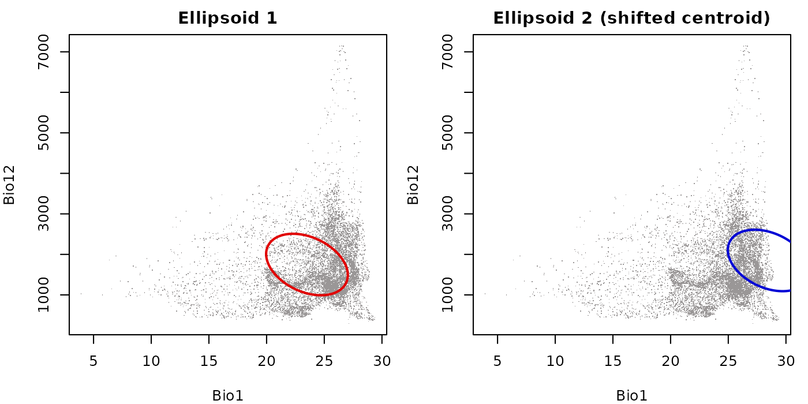
Without fixed_lims, each panel would rescale to its own
data extent, making the two ellipsoids appear the same size regardless
of their actual difference in position or spread.
add_data() and add_ellipsoid()
add_data() and add_ellipsoid() layer
content onto an existing plot opened by plot_ellipsoid().
The key thing to keep in mind is drawing order: whatever is drawn last
sits on top. The typical order is background first, occurrence points
second, ellipsoid boundary last.
Layering background, occurrences, and boundary
This is the most common layering pattern. We open the plot with a muted background, add occurrence points in a distinctive color, then draw the ellipsoid boundary on top so it is not obscured by the points.
# Simulate occurrence points from inside the ellipsoid
set.seed(42)
occ_idx <- sample(which(pred_trunc$suitability_trunc > 0), 40)
occ_pts <- back_data[occ_idx, ref_ellipse$var_names]
par(mar = mars)
# Step 1: background (muted color, boundary also muted so it sits behind)
plot_ellipsoid(ref_ellipse,
background = back_data[, ref_ellipse$var_names],
col_bg = "#c5c5c5",
col_ell = "#c5c5c5",
pch = ".", lwd = 1,
xlab = "Bio1 (Mean Annual Temperature)",
ylab = "Bio12 (Annual Precipitation)",
main = "Background + occurrences + boundary")
# Step 2: occurrence points on top of background
add_data(occ_pts,
x = "bio_1", y = "bio_12",
pts_col = "#0004d5", pch = 19, cex = 1.2)
# Step 3: ellipsoid boundary on top of everything
add_ellipsoid(ref_ellipse, col_ell = "#e10000", lwd = 2)
legend("topright",
legend = c("Background", "Occurrences", "Ellipsoid boundary"),
col = c("#c5c5c5", "#0004d5", "#e10000"),
pch = c(16, 19, NA), lty = c(NA, NA, 1),
lwd = c(NA, NA, 2), cex = 0.8, bty = "n")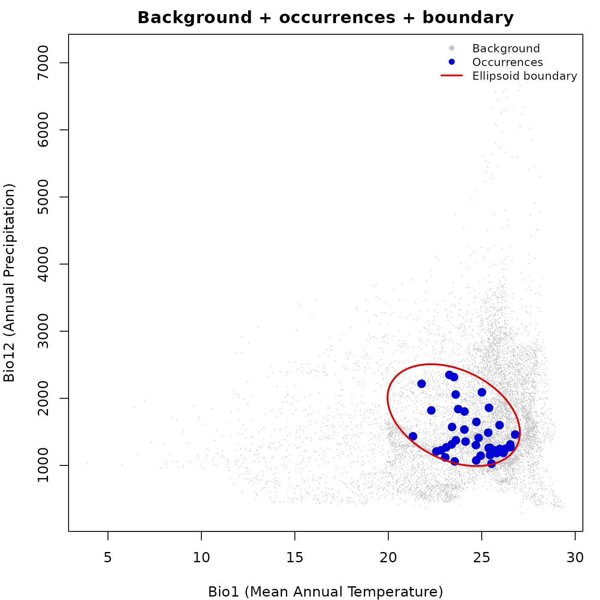
Coloring occurrence points by a continuous variable
add_data() also supports col_layer, which
maps a continuous column onto a palette the same way
plot_ellipsoid() does. This is useful for showing
suitability, Mahalanobis distance, or any other variable at the
occurrence locations on top of a background.
# Predict suitability at the occurrence points
occ_pred <- predict(ref_ellipse,
newdata = occ_pts,
include_suitability = TRUE,
include_mahalanobis = FALSE,
verbose = FALSE)
par(mar = mars)
# Background in grey
plot_ellipsoid(ref_ellipse,
background = back_data[, ref_ellipse$var_names],
col_bg = "#d4d4d4",
col_ell = "#e10000",
pch = ".", lwd = 2,
xlab = "Bio1 (Mean Annual Temperature)",
ylab = "Bio12 (Annual Precipitation)",
main = "Occurrences colored by suitability")
# Occurrence points colored by suitability
add_data(occ_pred,
x = "bio_1", y = "bio_12",
col_layer = "suitability",
pal = vir_pal,
pch = 19, cex = 1.4)
add_ellipsoid(ref_ellipse, col_ell = "#e10000", lwd = 2)
legend("topright",
legend = c("Background", "Ellipsoid boundary",
"Low suitability", "High suitability"),
col = c("#d4d4d4", "#e10000", vir_pal[5], vir_pal[95]),
pch = c(16, NA, 19, 19), lty = c(NA, 1, NA, NA),
lwd = c(NA, 2, NA, NA), cex = 0.8, bty = "n")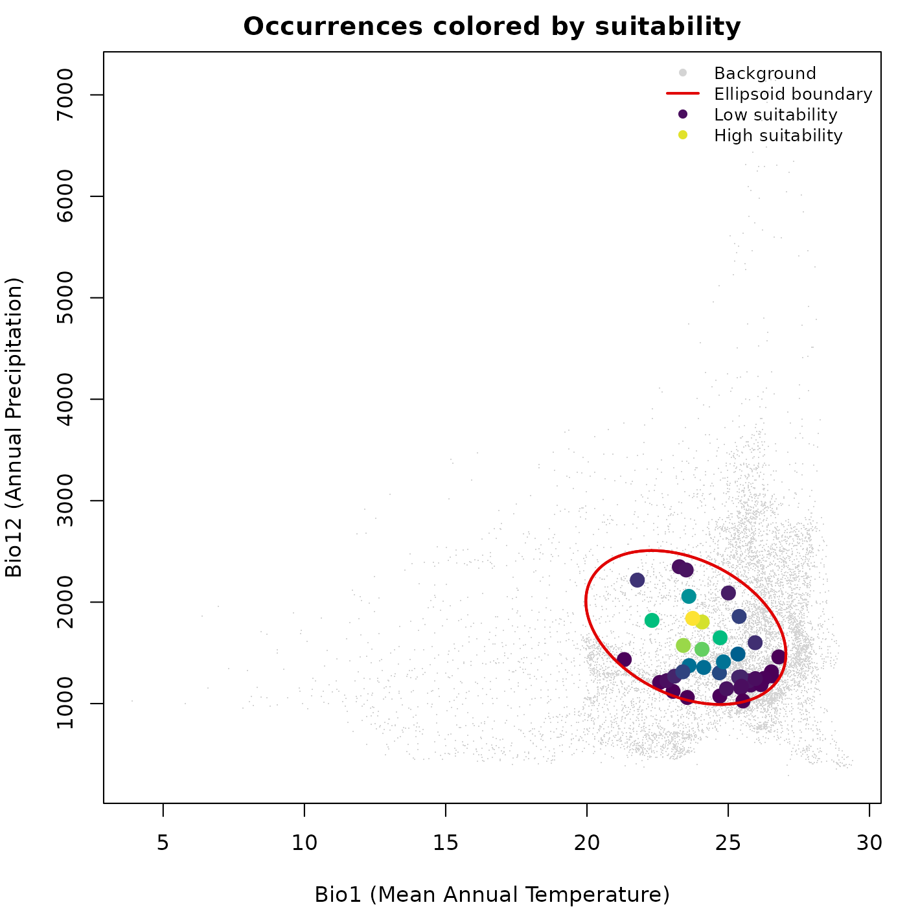
plot_ellipsoid_pairs()
plot_ellipsoid_pairs() automatically generates all
pairwise two-dimensional projections of an ellipsoid and arranges them
in a grid. The number of panels is
where
is the number of dimensions. For a two-dimensional ellipsoid there is
one pair; for three dimensions there are three; and so on.
The key feature is that axis limits are pre-computed globally across all variables and shared across all panels. Without this, each panel would rescale to its own data extent, making niche widths appear identical across dimensions even when they differ substantially.
Pairs with background
# Build a 3D ellipsoid for a more interesting pairs example
range_3d <- data.frame(bio_1 = c(27, 35),
bio_12 = c(1000, 1500),
bio_15 = c(60, 75))
ellipse_3d <- build_ellipsoid(range = range_3d)
#> Starting: building ellipsoidal niche from ranges...
#> Step: computing covariance matrix...
#> Step: computing additional ellipsoidal niche metrics...
#> Done: created ellipsoidal niche.
par(cex = 0.7)
plot_ellipsoid_pairs(ellipse_3d,
background = back_data[, ellipse_3d$var_names],
col_ell = "#e10000",
col_bg = "#9a9797",
lwd = 2, pch = ".")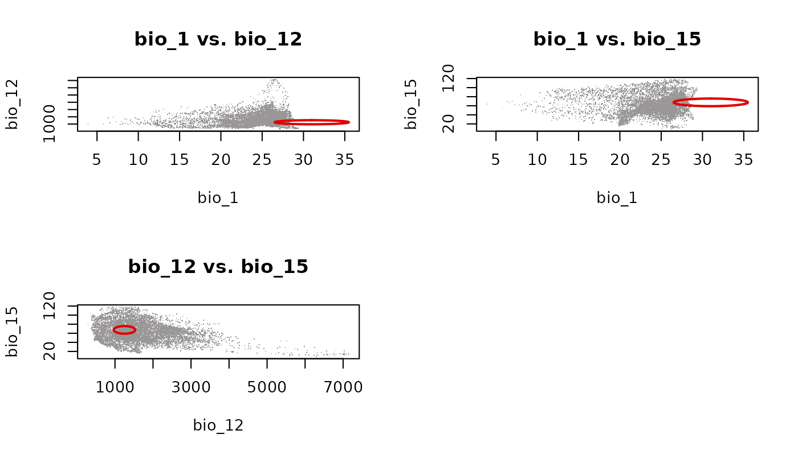
Each panel shows the ellipsoid projected onto a different pair of variables. Because axis limits are shared globally, the relative spread of the ellipsoid across dimensions is visually preserved. The empty cell in the 2x2 grid is a consequence of having three pairs and a layout that rounds up to four cells.
Pairs with predictions
plot_ellipsoid_pairs() also accepts
prediction directly. This is the recommended way to show
suitability or Mahalanobis distance across all pairwise projections at
once.
suit_3d <- predict(ellipse_3d,
newdata = back_data[, ellipse_3d$var_names],
include_mahalanobis = FALSE,
include_suitability = TRUE,
suitability_truncated = TRUE,
verbose = FALSE)
par(cex = 0.7)
plot_ellipsoid_pairs(ellipse_3d,
prediction = suit_3d,
col_layer = "suitability_trunc",
pal = vir_pal,
col_bg = "#d4d4d4",
col_ell = "#e10000",
lwd = 2, pch = 16, cex_bg = 0.3)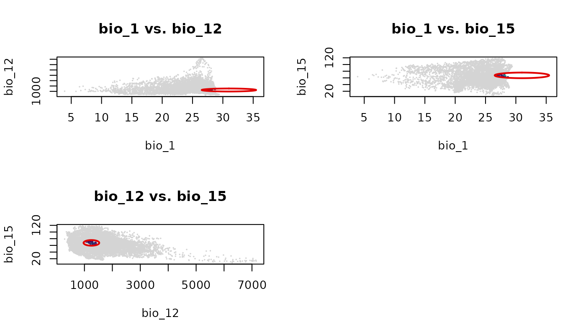
The grey outside region and colored inside region behave identically
to a single plot_ellipsoid() call with a truncated
col_layer, applied consistently across every panel.
par(original_par)